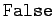
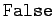
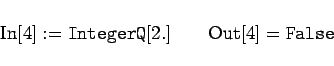

Inhalt Index DeskTop Bronstein

 Computeralgebrasysteme Mathematica Zahlenarten in Mathematica
Computeralgebrasysteme Mathematica Zahlenarten in Mathematica


Mathematica kennt vier Arten von Zahlen, die in der folgenden Tabelle dargestellt sind.
| Zahlenart | Kopf | Charakteristik | Eingabe |
| Ganze Zahlen | exakte ganze Zahl beliebiger Länge | nnnnn | |
| Rationale Zahlen | teilerfremder Bruch der Form | pppp/qqqq | |
| Reelle Zahlen | Gleitpunktzahl beliebiger spezifierter Präzision | nnnn.mmmm | |
| Komplexe Zahlen | komplexe Zahl der Form zahl + zahl |
Reelle Zahlen, d.h. Gleitpunktzahlen, dürfen beliebige Länge haben. Wird eine ganze Zahl nnn in der Form nnn. geschrieben, so faßt Mathematica sie als Gleitpunktzahl, also vom Typ , auf.
Mit kann man den Typ einer Zahl x feststellen. So liefert , während ergibt. Die reellen und imaginären Komponenten einer komplexen Zahl können beliebigen Zahlentypen angehören. Eine Zahl wie wird Mathematica dem Typ  zuordnen, während vom Typ
zuordnen, während vom Typ  ist, da 0. als Gleitpunktzahl mit dem genäherten Wert 0 aufgefaßt wird.
ist, da 0. als Gleitpunktzahl mit dem genäherten Wert 0 aufgefaßt wird.
Es gibt einige weitere Operationen, um Auskünfte über Zahlen zu erhalten. So liefert
| (20.7a) |
Anderenfalls ergibt sich Hier sind  und  die Symbole für die BOOLEschen Werte ,,Wahr`` und ,,Falsch``.
und  die Symbole für die BOOLEschen Werte ,,Wahr`` und ,,Falsch``.
testet, ob x eine ganze Zahl ist, weshalb
|  | (20.7b) |
ergibt. Ähnliche Tests für Zahlen sind mit den Operatoren  , und durchführbar. Ihr Sinn ist selbsterklärend. So ergibt
, und durchführbar. Ihr Sinn ist selbsterklärend. So ergibt
| (20.7c) |
während
| (20.7d) |
liefert.
Die zuletzt genannten Tests gehören zu einer ganzen Gruppe von Testoperatoren, die alle mit enden und jeweils mit  oder im Sinne eines logischen Tests antworten (u.a. Typprüfung).
oder im Sinne eines logischen Tests antworten (u.a. Typprüfung).